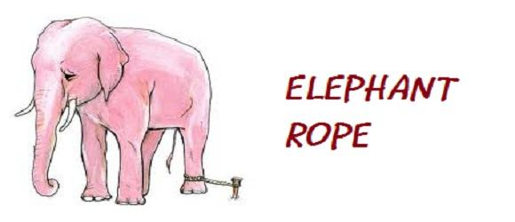

Back
Audiobook
Pause
The Elephant Rope

A gentleman was walking through an elephant camp, and he spotted that the elephants weren't being kept in cages or held by the use of chains. All that was holding them back from escaping the camp, was a small piece of rope tied to one of their legs. As the man gazed upon the elephants, he was completely confused as to why the elephants didn't just use their strength to break the rope and escape the camp. They could easily have done so, but instead, they didn't try to at all. Curious and wanting to know the answer, he asked a trainer nearby why the elephants were just standing there and never tried to escape. The trainer replied; "When they are very young and much smaller we use the same size rope to tie them and, at that age, it's enough to hold them. As they grow up, they are conditioned to believe they cannot break away. They believe the rope can still hold them, so they never try to break free." The only reason that the elephants weren't breaking free and escaping from the camp was that over time they adopted the belief that it just wasn't possible. Moral of the story: No matter how much the world tries to hold you back, always continue with the belief that what you want to achieve is possible. Believing you can become successful is the most important step in actually achieving it.